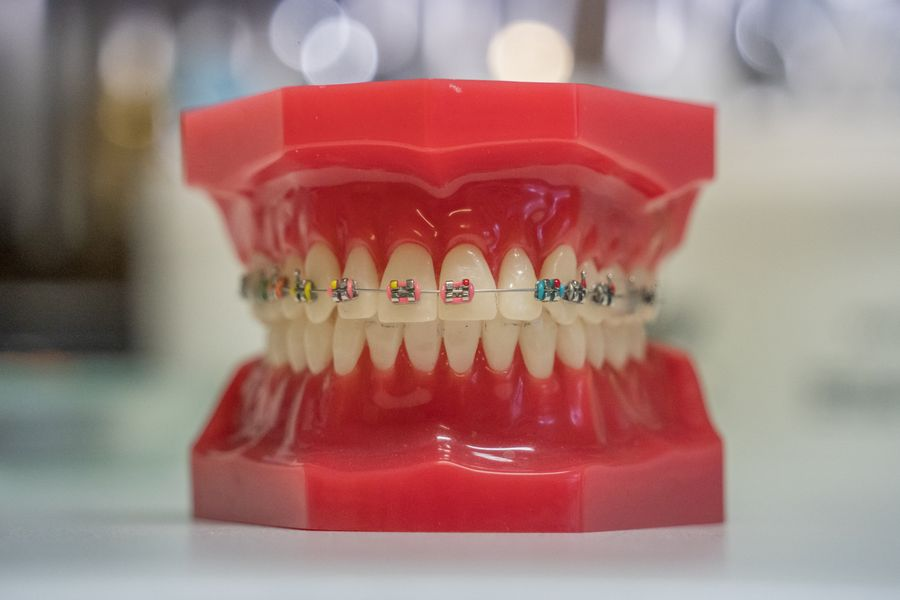
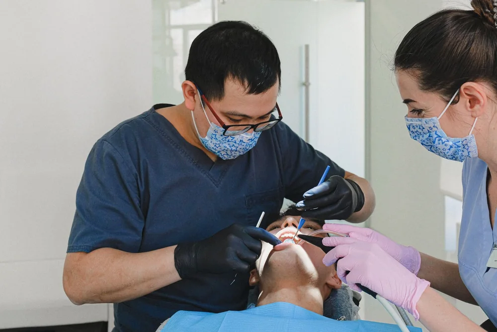
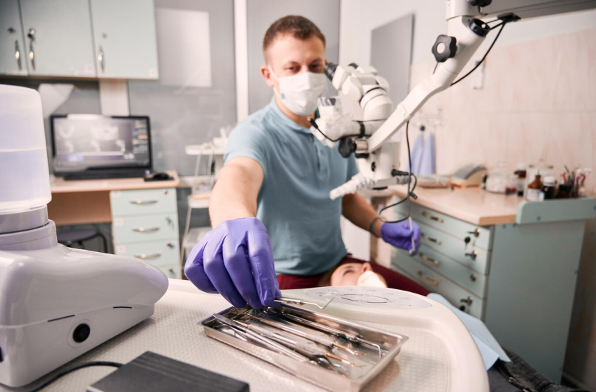

01 · Восстановление зубов
01 · Восстановление зубовИмплантация
Установка имплантата Osstem или Dentium. Стоимость остальных этапов уточняется отдельно.
33 000 ₽Весь раздел ↗
Семейная стоматология · рядом с домом
Диагностика, лечение зубов, профессиональная гигиена, ортодонтия, протезирование и имплантация. На консультации врач объяснит этапы и стоимость процедур.


01 / Направления
Основные виды лечения, которые представлены в клинике. Точный состав и стоимость услуг уточняются после осмотра.
01 · Восстановление зубовУстановка имплантата Osstem или Dentium. Стоимость остальных этапов уточняется отдельно.

02 · Ортодонтия
03 · ПрофилактикаВосстановление зуба фотополимером на одну поверхность — 4 950 ₽. Первичное эндодонтическое лечение однокорневого зуба — 7 150 ₽; штифт и постоянная пломба не входят.
Цены относятся к отдельным позициям прайса. Полный план лечения и его стоимость врач определит после осмотра.
02 / Клиника
Галерея собрана из фотографий, опубликованных клиникой. Без демонстрационных интерьеров и сгенерированных изображений.



03 / Врачи
Профили, стаж и обучение показаны по опубликованным материалам клиники. Нажмите «Подробнее», чтобы открыть образование и документы.

Стоматолог-хирург, имплантолог, ортопед, терапевт · стаж 25 лет.
Практика: имплантация Osstem и Straumann. Дополнительное обучение по хирургическим и ортопедическим протоколам, препарированию под виниры и лечению корневых каналов с использованием микроскопа.

Врач-стоматолог, хирург-имплантолог · стаж 10 лет.
РНИМУ им. Н. И. Пирогова, специальность «Стоматология», квалификация «врач-стоматолог». Дополнительное обучение по реставрации жевательной группы зубов, синус-лифтингу и удалениям.
Сертификат обучения, 2022 ↗
Стоматолог-ортодонт · стаж 7 лет.
МГМСУ им. А. И. Евдокимова, специальность «Стоматология», квалификация «врач-стоматолог».

Стоматолог-терапевт · стаж более 10 лет.
Художественная реставрация фронтальных зубов; клиническая эндодонтия; эндодонтическое перелечивание.

Врач-стоматолог · стаж более 5 лет.
Диплом специалиста по стоматологии. Ординатура по стоматологии ортопедической.
04 / Первый визит
Запись в этот филиал начинается с телефонного звонка. На приёме врач оценивает ситуацию, обсуждает варианты и объясняет стоимость процедур.
Позвонить · +7 (904) 519-96-97Позвоните в клинику
Администратор поможет согласовать время.
Обсудите ситуацию
Врач проведёт осмотр и предложит необходимые этапы.
Сверьте стоимость
Позиции и цены можно заранее найти в каталоге.
06 / Контакты
г. Москва, Коммунарка,
ул. Магеллана, 5